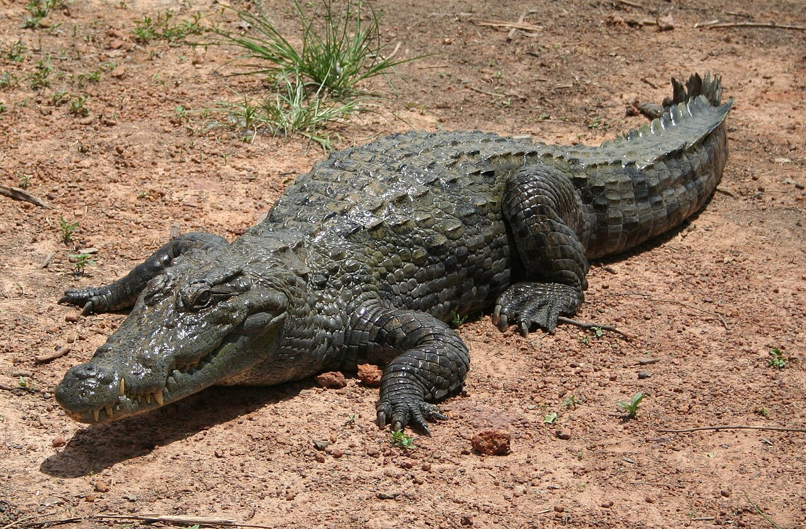

Krokodil(er)

Krokodiler (Crocodylidae) är en familj av ordningen krokodildjur. De är större kräldjur som lever i anslutning till vatten i Afrika, Asien, Amerika och Australien. Beroende på taxonomi räknas 13 eller 14 nu levande arter till familjen.